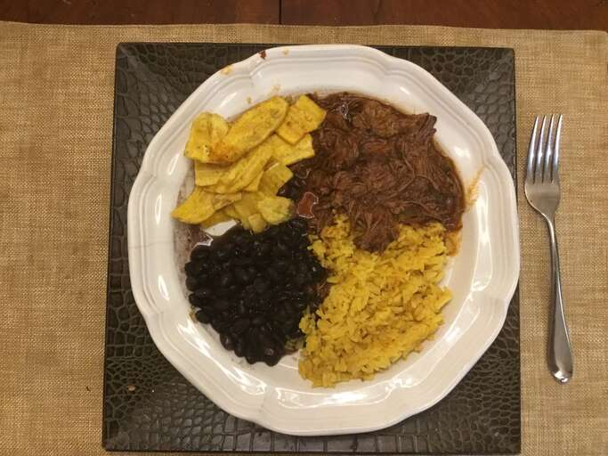

Ropa Vieja encapsulates the essence of Cuban cuisine – a harmonious blend of Spanish, African, and Caribbean
influences resulting in a dish that's both flavorful and culturally significant. Its hearty and homely nature reflects
the warmth and hospitality that the Cuban culture is known for, making it a must-try for anyone looking to explore
the vibrant world of Cuban gastronomy.